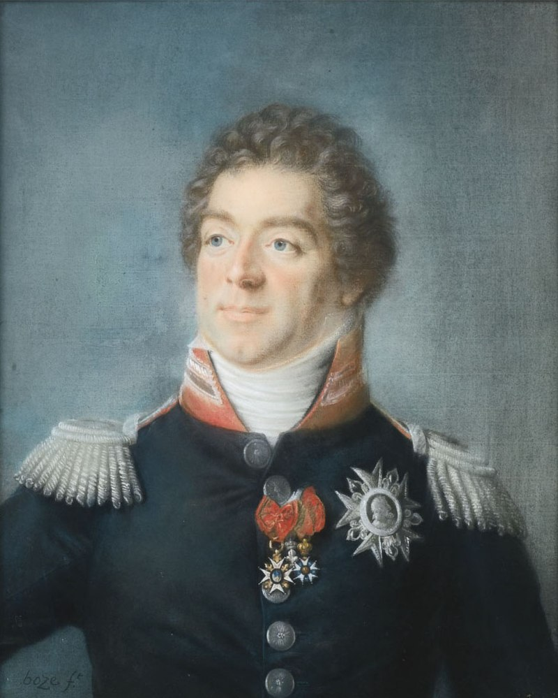
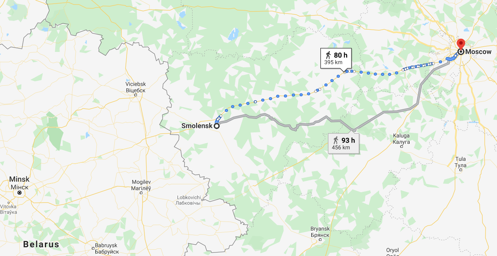
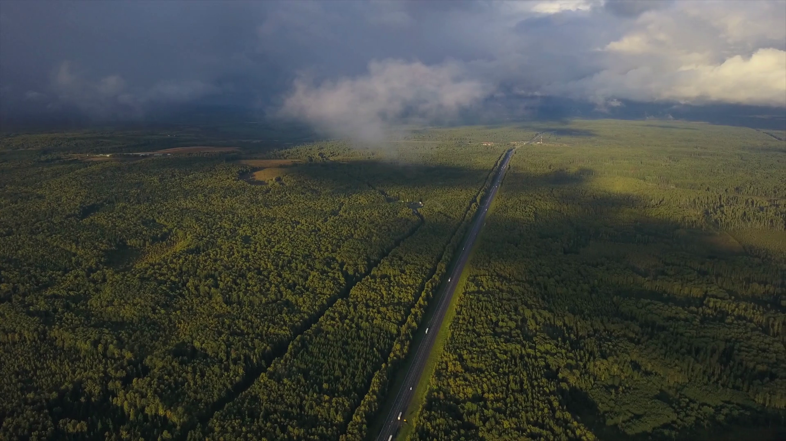

스몰렌스크에서 모스크바로 - 프랑스 측의 사정
게시: 2020-05-11T06:30:11+09:00
나폴레옹은 스몰렌스크를 점령한 뒤 부하들에게 신이 나서 러시아군의 비겁함을 비웃으며 이제 러시아 본토에 발판을 마련했으니 러시아의 돈과 자원을 이용해서 병력을 쉬게 하며 폴란드와 리투아니아에서 추가 병력을 모집하겠다고 큰소리를 쳤습니다. 그의 마복시였던 콜랭쿠르에게는 다음과 같이 구체적인 계획까지 말했습니다. "러시아의 신성한 도시 중 하나인 스몰렌스크를, 그것도 러시아 백성들이 지켜보는 앞에서 이렇게 포기했으니 러시아군의 입장은 정말 난처해졌어. 이제 우리는 러시아군을 조금 더 편안한 거리로 쫓아내기만 한 뒤에 통합 작업을 시작하면 돼. 이 요충지를 이용해서 병력을 쉬게 하면서 이 지방을 조직화하겠어. 알렉산드르의 기분이 아주 좋아질 일이지. 그러면 이제 내 군단들은 더욱 강해질 거야. 난 비텝스크에 사령부를 두고 폴란드를 무장시킨 뒤에 모스크바로 쳐들어갈지 상트 페체르부르그로 쳐들어갈지 골라야겠어." 그러나 이를 듣는 부하들의 얼굴은 그리 밝지 못했습니다. 그런 이야기는 바로 얼마전 비텝스크에서 더 전진할 것인가 멈출 것인가를 고민할 때 나폴레옹이 질리지도 않고 되풀이하던 이야기에 불과했기 때문이었습니다. 이제 달라진 것은 러시아 내륙으로 더 깊숙이 들어왔기 때문에 여기서 멈추는 것이 더 어려워졌다는 것과, 스몰렌스크가 홀랑 불타버리는 바람에 여기서 머무르는 것은 비텝스크에서보다 더 말이 안되는 상황이 되었다는 것이었습니다. 식량이 없다는 것도 똑같았습니다. 식량은 커녕, 스몰렌스크 전투에서 발생한 많은 부상병들을 스몰렌스크 시내의 불타버린 건물들까지 데리고는 왔지만 환자들을 위한 침대는 커녕 차가운 바닥에 깔아줄 짚단조차 구하지 못해 대부분 맨바닥에 누워야 했습니다. 심지어 나폴레옹이 더 전진해야할지 여기서 멈춰야할지 결정을 못하고 갈팡질팡하고 있다는 사실까지도 마찬가지였습니다. 나폴레옹 자신도 자기가 말한 것이 다 헛소리라는 것을 잘 알고 있었습니다. 그러나 여기서 머무를 수 없다고 후퇴할 수는 없었습니다. 이미 후퇴하기에는 너무 깊숙히 들어왔고, 또 여기서 후퇴했다가는 무력과 영광으로 지탱되던 자신의 제국이 무너질 수도 있었습니다. 그렇다면 남은 것은 전진하는 것 뿐이었는데, 그것도 그다지 매력적인 조건은 아니었습니다. 나폴레옹에게 맹목적인 충성을 다하던 다부를 제외한 거의 모든 장군들은 다 여기서 멈춰야 한다는 의견이었습니다. 그들은 다른 것을 다 떠나서, 더 전진하고 싶지가 않았습니다. 여태까지 겪었던 모든 어려움, 즉 식량 부족과 더위, 많은 부상병들과 환자, 무엇보다 항복할 생각이 전혀 없는 것이 확실해보이는 러시아군을 쫓아 어디까지 가야 하는지를 생각하면 전진하지 않는 것이 답이었습니다. 특히 이번에 러시아군이 유서깊은 신성도시 스몰렌스크를 다 불태우고 갔다가는 사실이 프랑스군의 마음을 무겁게 했습니다. 이건 이탈리아나 독일, 심지어 스페인에서도 없었던 일이었습니다. 이제 프랑스군은 러시아인들이 정말 끝까지 해보려 한다는 것을 실감했습니다.

(베르티에(Louis-Alexandre Berthier)입니다. 그는 나폴레옹보다 13살이나 많은 직업 군인 집안 출신으로서, 프랑스 혁명 전부터 장교로 복무했고 로샹보(Rochambeau) 장군을 따라서 미국 독립 전쟁에도 참전했었습니다. 그는 대령 계급까지 오른 뒤에 이탈리아 방면군에 배속되었는데, 거기서 나폴레옹을 처음 만나게 됩니다. 아마 그의 사주팔자에 남쪽에서 귀인을 만난다는 말이 있었을 것 같습니다.) 용감한 랍(Rapp)조차 더 이상 전진해서는 안된다며 나폴레옹에게 직언했다가 "이미 와인은 잔에 따라졌고, 이젠 그걸 마셔야 해!" 라며 따끔한 반박만 들었습니다. 나폴레옹의 총신이라고 할 수 있는 참모장 베르티에도 전진을 멈춰야 한다는 입장이었는데, 더 이상 나폴레옹에게 멈추자고 직언할 용기가 없었던 다른 부하들은 베르티에만 쳐다보았습니다. 그래서 항상 나폴레옹과 붙어있었던 베르티에가 총대를 매고 자주 나폴레옹에게 멈춰야 한다고 징징거리는 역할을 했는데, 결국 나폴레옹도 화가 나서 베르티에에게 "가고 싶으면 넌 파리로 돌아가서 니 첩과 놀아나도 좋다, 넌 도움 하나 안되는 X일 뿐이다, 난 누구에게도 강요하지 않으니 돌아가라 !"라는 막말을 하는 단계까지 왔습니다. 그리고 늘 나폴레옹의 식탁에서 함께 식사를 하던 베르티에는 그 이후 며칠동안이나 나폴레옹의 식사 초대를 받지 못했습니다. 이렇게 다소 유치한 보복을 할 정도로 나폴레옹은 기분이 좋지 않았습니다. 그만큼 그의 상황이 후퇴도 전진도 정지도 못할 정도로 엉망진창이었다는 반증이었습니다. 그는 순찰을 돌다 제멋대로 약탈 행위를 벌이던 병사들을 발견하고 직접 승마용 채찍으로 그들을 후려갈기는 등 매우 신경질적인 반응을 보이다가도, 뮈라가 고집센 전진파인 다부에게 더 이상 전진해서는 안된다며 열심히 설득을 하는 장면을 직접 목격하고도 아무 말 없이 침울한 얼굴로 그냥 돌아서는 등 감정기복도 심했습니다. 하지만 이 모든 것은 시간 낭비였을 뿐입니다. 결국 나폴레옹은 전진하는 것 외에는 방법이 없었습니다. 무엇보다, 이제 그들은 민스크-모스크바 군용도로를 따라 이동했으므로 전진 속도도 훨씬 빨랐습니다. 모스크바와의 거리도 이젠 고작 390km 정도 밖에 남지 않았기 때문에, 강행군을 한다면 불과 8일만 더 가면 되었습니다. 딱 8일만 더 가면 이 모든 고생에 대한 결실을 볼 수 있다는 것은 외면하기에는 너무 달콤한 유혹이었습니다. 나폴레옹도 러시아의 가혹한 겨울에 대해서는 잘 알고 있었습니다. 그러나 때는 아직 8월 하순, 전쟁하기에 좋은 날씨가 적어도 3개월은 남아 있었습니다. 아무리 생각해봐도 여기서 돌아서는 것은 바보짓이었습니다. 나폴레옹은 결국 부하들의 반대를 물리치고 진격을 명령했습니다. 8월 24일 밤의 일이었습니다.

(러시아가 굉장히 넓은 땅 같지만 막상 또 스몰렌스크까지 도착하고 나니 모스크바도 그렇게 멀지 않게 느껴집니다. 개성에서 부산까지 정도의 거리입니다.)

(현대의 민스크-모스크바 간 고속도로의 모습입니다. 이건 삼림지대를 통과하는 부분이네요.)
그런데 스몰렌스크까지 고생하면서 오던 길과는 달리, 이제 도로 상태는 매우 좋아졌지만 상황은 더 나빠졌습니다. 러시아군은 여태까지 철수하는 모든 곳에서 보급품과 식량이 될 만한 것들을 불사르고 후퇴했고, 그건 스몰렌스크 이후에도 마찬가지였습니다. 그런데 이제부터는 정말 모든 것을 불태우고 후퇴했습니다. 그래도 여태까지는 농가나 마을 건물은 그대로 놓아두었고 주민들은 그대로 놓아두었는데, 스몰렌스크부터는 모든 집과 건물, 초지와 설익은 밀밭 등 불에 탈 만한 모든 것을 모조리 다 불태우기 시작했습니다. 민간인들도 강제로 소개시켜 프랑스군이 가는 모든 곳은 이미 유령만 존재하는 폐허 뿐이었습니다. 러시아군을 추격하는 프랑스군이 야간에 노숙을 할 때 눈에 들어오는 광경은 불붙은 지평선 뿐이었습니다. 여태까지 지나온 리투아니아에서는 가는 곳마다 벌떼처럼 따라 붙는 지저분하고 가난한 현지 유태인 장사꾼들이 지긋지긋했는데, 이젠 그들이 그리울 지경이었습니다. 그때는 터무니없이 비싼 가격에 빵과 보드카를 파는 그들에게 화가 났는데, 이젠 그보다 더 비싼 가격에라도 뭔가를 사고 싶었습니다. 게다가 잘 닦인 둑길은 짐마차 등 차량에게 양보하고 보병들은 둑길 양쪽의 바닥길을 따라 걸어야 했습니다. 그럼에도 불구하고 여태까지의 진흙탕을 헤치는 것보다는 편해야 했습니다. 하지만 러시아군도 이 길을 따라 황급히 후퇴하고 있었으므로 프랑스군도 그만큼 죽어라 강행군을 해야 했습니다. 네덜란드 출신의 총기병 예프 아벨(Jef Abbeel)에 따르면 이때 그들은 새벽 2~3시에 일어나 행군을 시작, 급히 용변을 볼 때 외에는 밤 11시까지 계속 행군했다고 합니다. 그렇게 강행군을 했는데도 도무지 러시아군을 따라 잡을 수가 없었습니다. 러시아군도 죽을 힘을 다해서 달아나고 있는 것은 확실했습니다. 그리고 전에는 보지 못했던 것들이 눈에 띄기 시작했습니다. 도로 곳곳에서 러시아군이 버리고 간 부서진 마차와 함께 죽은 병사들과 군마들의 시체가 꽤 많이 눈에 띄였습니다. 스몰렌스크 전투 이후 러시아군에게는 무슨 일이 벌어지고 있었을까요 ?
Source : 1812 Napoleon's Fatal March on Moscow by Adam Zamoyski https://en.wikipedia.org/wiki/Louis-Alexandre_Berthier